Quiet / Neutral
Calm atmosphere with restrained color.
Soft fog, reflective water, muted mountains, and quiet natural texture for residential, wellness, hospitality, and professional interiors.
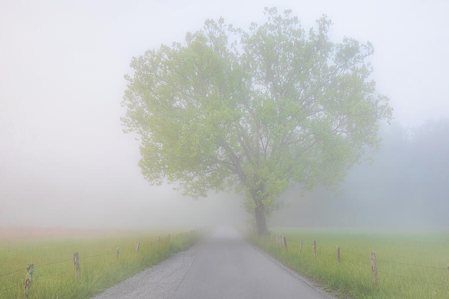
Foggy Hyatt Lane
Soft layered fog and understated landscape detail for bedrooms, lounges, wellness rooms, and quiet residential projects.
Shop this print →
Morning Light at Schwabacher Landing
A balanced mountain reflection with enough openness and stillness for refined residential, office, and hospitality walls.
Shop this print →
Moody Lily Pond
Quiet alpine water and restrained mountain atmosphere for bedrooms, wellness spaces, offices, and fireplace walls.
Shop this print →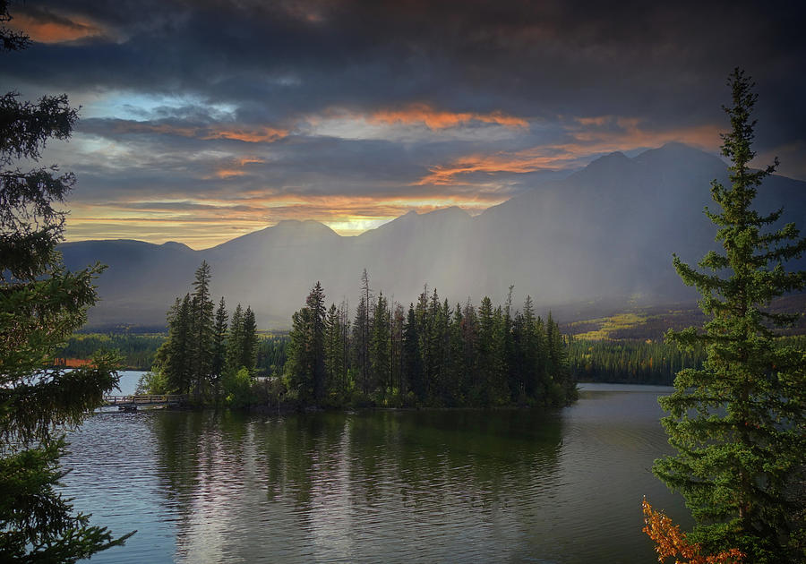
Pyramid Lake Morning
Soft mountains and reflective water for upscale lounges, suites, reception spaces, and calm modern interiors.
Shop this print →Warm Earth Tones
Natural warmth without decorative excess.
Autumn color, earth tones, western landscapes, and layered forest texture for warm modern rooms, lodges, hospitality, and residential projects.

Badlands Spring Morning
Muted prairie color and sculpted landforms for modern rustic interiors, offices, hospitality, and large residential walls.
Shop this print →
Autumn Beginnings Wyoming
Open western space and early fall color for cabins, fireplace walls, lodge rooms, offices, and warm contemporary interiors.
Shop this print →
Reflections Lake Alaska
Mountain scale, autumn color, and still water for living rooms, hospitality suites, offices, and mountain-inspired projects.
Shop this print →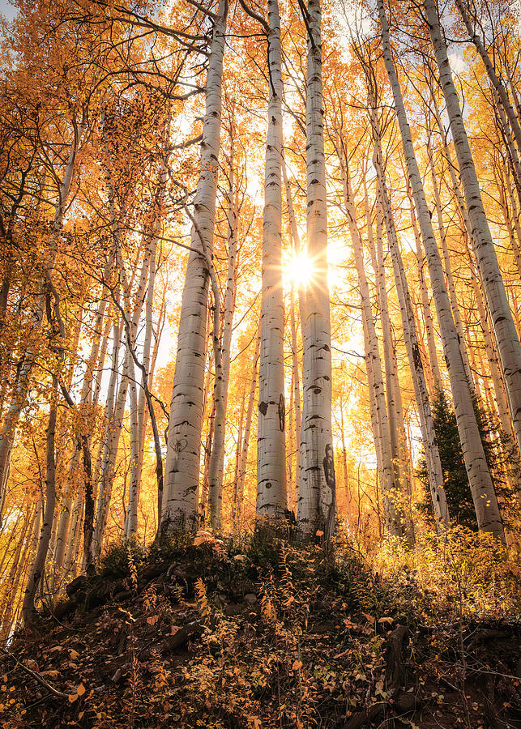
Golden Aspen Forest Colorado
Layered golden forest texture for large horizontal walls, warm residential interiors, lodges, and hospitality spaces.
Shop this print →Blue / Restorative
Water, movement, and restorative visual rhythm.
Water-based imagery selected for spa, wellness, healthcare, hospitality, senior living, and residential interiors that benefit from a softer connection to nature.

Gentle Waves
Clean blue movement with a contemporary feel for spas, wellness reception, coastal interiors, and modern care environments.
Shop this print →
Grotto Falls
Forest water and soft natural light for spa rooms, wellness offices, restorative residential design, and biophilic interiors.
Shop this print →
Multnomah Falls
A strong vertical waterfall for tall architectural walls, suites, entryways, spa environments, and hospitality projects.
Shop this print →
Horsetail Falls Alaska
Ethereal mountain water with enough scale for hospitality suites, lodges, tall feature walls, and nature-driven commercial interiors.
Shop this print →Monochrome
Architectural restraint and quiet authority.
Black-and-white landscapes for executive offices, boutique hospitality, corridors, residential projects, and spaces where the artwork needs to feel refined rather than colorful.
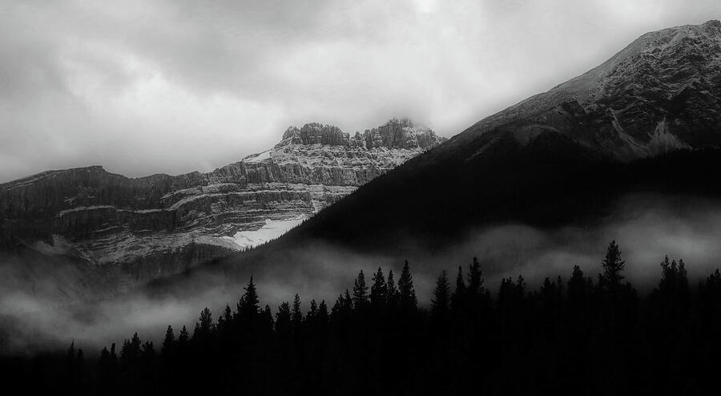
Dreamy Mountainscape Canada
Misty mountain form and restrained contrast for offices, bedrooms, hospitality lounges, and calm modern interiors.
Shop this print →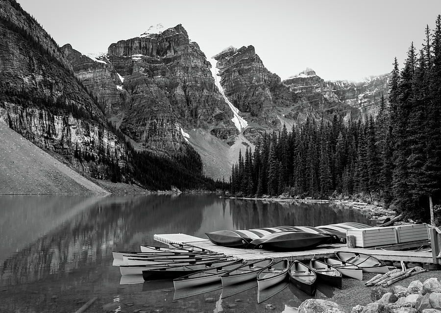
Monochrome Moraine Lake
Strong alpine geometry and water for great rooms, offices, hospitality lounges, and refined contemporary interiors.
Shop this print →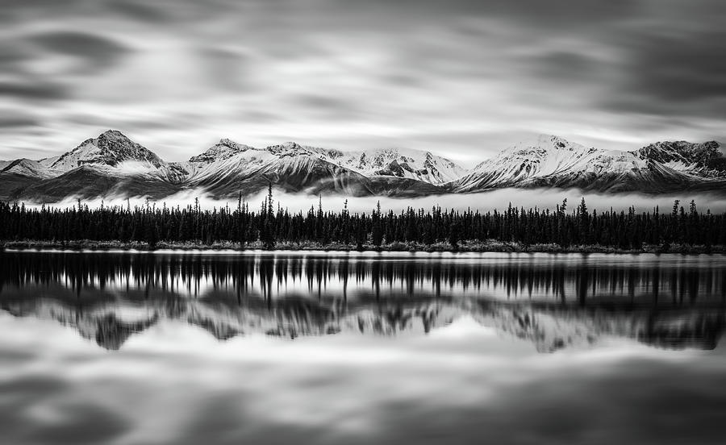
Denali Highway Reflection
A quiet reflection study for living rooms, offices, lodge interiors, and gallery-style commercial environments.
Shop this print →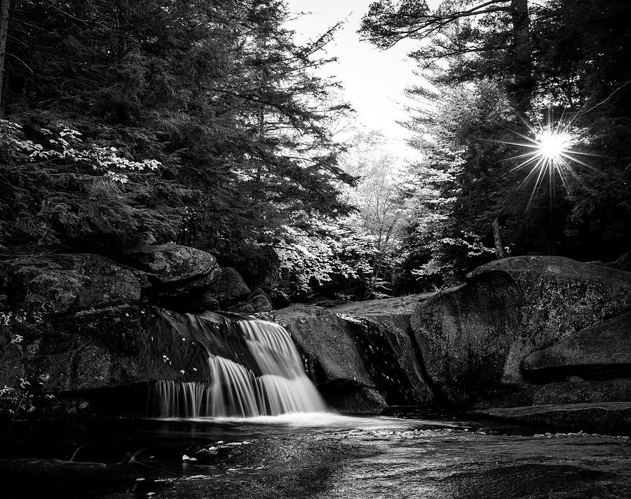
Waterfall Sunburst
Black-and-white water and filtered light for wellness rooms, spa spaces, corridors, and restorative architectural interiors.
Shop this print →Mountains / Statement
Scale, light, and destination atmosphere.
Luminous and dramatic mountain work for lobbies, lodge interiors, executive offices, reception areas, great rooms, and other walls that can support stronger visual presence.

Magical Mountain Light
Dramatic alpine light and atmosphere for entryways, executive offices, lodge interiors, reception areas, and focal walls.
Shop this print →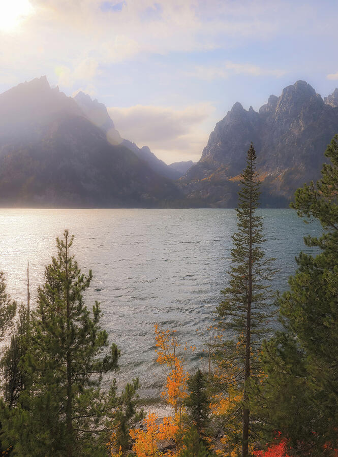
Jenny Lake Magical Sunrise
Soft sunrise and alpine water for mountain homes, hospitality suites, living rooms, and elevated residential interiors.
Shop this print →
Kenai Fjords Landscape
Rugged mountain light and blue-green water for large hospitality walls, lodge interiors, offices, and dramatic focal points.
Shop this print →
Resurrection Bay Waterfall
Cinematic mountain texture and distant water for lodges, hospitality, large residential spaces, and destination-driven interiors.
Shop this print →Regional / Sense of Place
Artwork connected to a real location.
Ohio and Northwest Ohio imagery for projects where local identity matters—healthcare, senior living, hospitality, offices, residences, and regional commercial spaces.
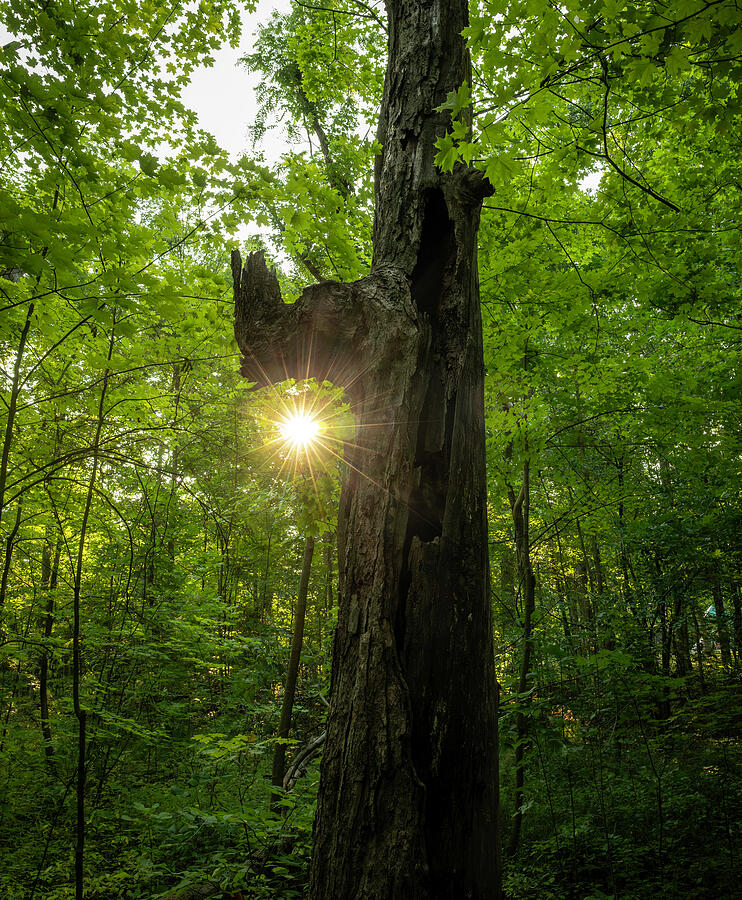
Framed Forest Light — Lima, Ohio
A sunburst through local woodland for entryways, bedrooms, reading rooms, offices, and Ohio-based projects.
Shop this print →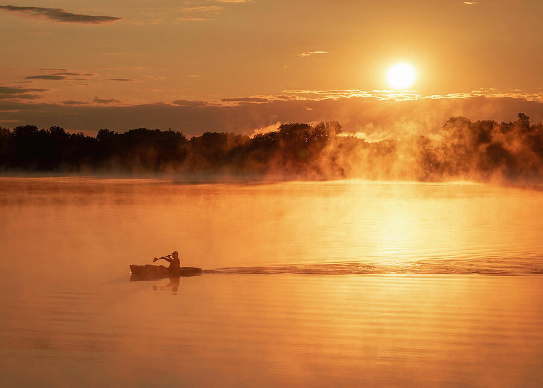
Morning Kayaker — Lima, Ohio
A misty Ottawa Metro Park scene with subtle human scale for healthcare, senior living, hospitality, offices, and local residential projects.
Shop this print →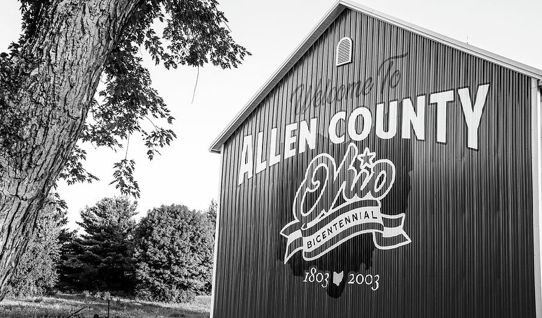
Allen County Barn
Regional agricultural character with restrained geometry for local offices, hospitality, senior living, and Ohio-focused interiors.
Shop this print →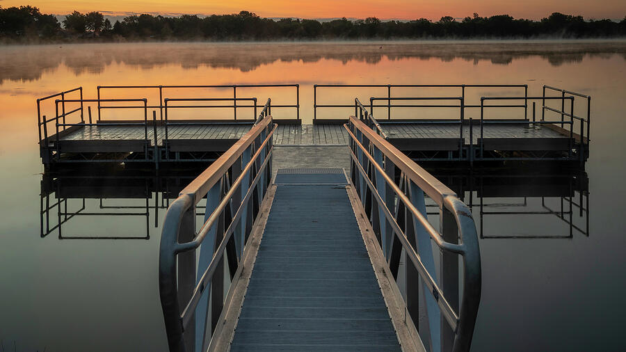
Ottawa Metro Dock — Lima, Ohio
Early fog, still water, and a familiar local park setting for regional healthcare, hospitality, office, and residential design.
Shop this print →